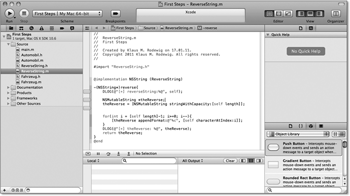
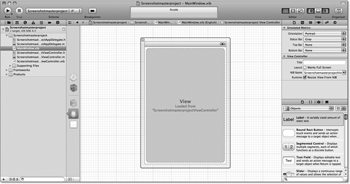
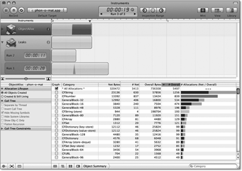

Zum Online-Shop
Zum Online-Shop
1.2 iOS-SDK
Apple stellt Programmierern zum Entwickeln von iOS-Applikationen das iOS-SDK zur Verfügung. Es enthält auch die Entwicklungsumgebung für Mac OS X. Es besteht aus einer Reihe von Tools, die einen bequemen Zugriff auf die Kommandozeilenprogramme wie den Compiler, den Linker, das Codesign und den Paketbuilder ermöglichen.
Das iOS-SDK beinhaltet neben einer IDE zahlreiche grafische Tools, mit denen die Entwicklung von iOS-Applikationen leicht von der Hand geht. Das Schöne an der Sache ist: Das iOS-SDK ist für registrierte Entwickler kostenlos. Es läuft nur unter Mac OS X und setzt Apple-Rechner mit Intel-Prozessoren voraus. Alte Macs mit PowerPC-CPUs sind daher ebenso außen vor wie Rechner mit anderen Betriebssystemen. Das SDK enthält einen Simulator, der das Testen von selbst geschriebenen Applikationen für die verschiedenen Gerätetypen (iPhone oder iPad) und Displaygrößen direkt auf dem Entwicklungssystem erlaubt. Der Simulator ist allerdings kein Ersatz für das Testen auf den Endgeräten.
Das SDK ist im iOS Dev Center [2](http://developer.apple.com/iphone/) und im Mac App Store erhältlich. Voraussetzung für das iOS Dev Center ist eine kostenlose Registrierung, mit der Sie allerdings nur die alte Entwicklungsumgebung (Xcode 3) erhalten. [3](Der Link befindet sich unauffällig am unteren Ende des Downloadbereichs im iOS Dev Center (Looking for Xcode 3 for Snow Leopard? Download).) Für OS X 10.7 (Lion) können Sie die kostenlose Version 4.1 aus dem Mac App Store herunterladen. Wenn Sie unter Snow Leopard mit Xcode 4 entwickeln möchten, müssen Sie sich leider kostenpflichtig registrieren und die Version 4.0 verwenden. Zu welchem Preis Apple die Version 4.2 von Xcode vertreibt, war bei Drucklegung (Anfang September 2011) noch nicht bekannt. Tabelle 1.1 gibt Ihnen einen Überblick über die verfügbaren Xcode-Versionen.
| OS X-Version | Xcode-Version | Bezugsquelle | Verfügbarkeit |
| 10.6 (Snow Leopard) | 3.2.6 | iOS Dev Center | Kostenlose Mitgliedschaft |
| 4.0.2 | Kostenpflichtige Mitgliedschaft | ||
| 4.2 | Wahrscheinlich Mac App Store und iOS Dev Center | Stand bei Drucklegung noch nicht fest. | |
| 10.7 (Lion) | 4.1 | Mac App Store | Kostenlos |
| 4.2 | Wahrscheinlich Mac App Store und iOS Dev Center | Stand bei Drucklegung noch nicht fest. |
Das Developer Center erlaubt Ihnen auch, auf die umfangreiche Entwickler-Dokumentation zuzugreifen. Diese besteht neben einer vollständigen API-Referenz aus Tutorials, Getting-Started-Dokumenten, Videos und Beispiel-Code.
Möchten Sie Ihre selbst geschriebenen Applikationen nicht nur im iOS-Simulator verwenden, sondern auf dem eigenen iPhone testen, ist eine Mitgliedschaft im iOS Developer Program erforderlich. Für 79 € pro Jahr bekommen Sie dort ein Zertifikat, mit dem Sie eigene Applikationen signieren und diese auf bis zu 100 dafür registrierte iOS-Geräte aufspielen können. Die Teilnahme am iOS Developer Program ist überdies die Voraussetzung dafür, Apps in den App Store einstellen zu können.
Das iOS Developer Program existiert in zwei Ausprägungen: Individual und Company. Die Company-Version unterscheidet sich von der Individual-Version durch die Fähigkeit, Entwicklerteams verwalten zu können, bietet dem Programmierer aber keine weiteren Vorteile.
Die Mitgliedschaft iOS Enterprise Program, die 279 € jährlich kostet, ermöglicht ebenfalls die Installation selbst geschriebener Programme auf über 100 eigenen Geräten. Mit diesem Programm können Sie aber keine Apps in den App-Store hochladen. Das Programm ist nur für Firmen mit einer DUNS-Nummer [4](http://www.dnb.ch/htm/690/de/Eindeutige-Identifikation.htm) zugänglich. Für private oder selbstständige Entwickler sowie kleine Firmen ist dieses Programm also uninteressant.
Nutzer aus dem akademischen Bereich können am kostenlosen iOS Developer University Program teilnehmen, das zwar den Test von selbst geschriebenen Apps auf Endgeräten erlaubt, aber keine Veröffentlichung im App-Store.
Wichtiger Hinweis: Bei allen kostenpflichtigen Programmen sind zwei Supportanfragen pro Jahr beim technischen Entwicklersupport von Apple enthalten. Sie können sich damit von Apple also bei der Entwicklung Ihrer Programme individuell unterstützen lassen. Weitere Supportanfragen können Sie als Mitglied im Entwicklerprogramm kostenpflichtig erwerben.
| Voraussetzungen für dieses Buch |
|
Um die in diesem Buch gezeigten Beispiele nachzuprogrammieren, reicht das iOS-SDK ohne die kostenpflichte Registrierung als Entwickler aus. Alle Beispiele laufen, zumindest mit Einschränkungen, im Simulator. Voraussetzung dafür ist lediglich die kostenlose Anmeldung im iOS Dev Center und das Herunterladen und Installieren des jeweils aktuellen iOS-SDK oder der Kauf des SDK im Mac App Store. Wir haben alle Anleitungen für Xcode 4 geschrieben und auch alle Screenshots dieses Buches damit erstellt. Es unterscheidet sich in vielen Bereichen sehr stark von der Version 3, die Sie über die kostenlose Registrierung im Developer Program erhalten. Wir empfehlen Ihnen die Verwendung von Xcode 4. Das iOS-SDK installiert sich standardmäßig im Verzeichnis /Developer. Die Programme des SDK befinden sich nach der Installation im Verzeichnis /Developer/Applications. |
1.2.1 Xcode
Xcode ist die Entwicklungsumgebung oder auch IDE für die Programmierung von MacOS-X- und iOS-Applikationen. Xcode bietet viele Funktionen. In erster Linie ist es aber ein Werkzeug zur Steuerung des Erzeugungsprozesses von Programmen. Es steuert dabei die verschiedenen Kommandozeilenprogramme wie den Compiler, Linker und andere. Außerdem enthält Xcode einen umfangreichen Quellcodeeditor. Code-Vervollständigung, das Falten von Code-Blöcken, Textmarken und Syntax Highlighting sind nur einige der Funktionen, die das Programmieren erleichtern. Xcode bietet Ihnen zudem noch eine grafische Schnittstelle zum Debugger.
Darüber hinaus ist Xcode das zentrale Tool zum Verwalten von iOS-Projekten. In der Projektansicht in der linken Hälfte des Xcode-Fensters sind alle Projekt-Dateien und -Ressourcen aufgeführt. Es bietet Integration von SCM-Tools zur Projekt- und Versionsverwaltung und den Zugriff auf die Dokumentation zu Cocoa und Objective-C. An Versionsverwaltungen unterstützt Xcode mittlerweile kein CVS und Perforce mehr, sondern nur noch Subversion und Git. Für das Suchen in SCM-Repositorys bietet Xcode einen eigenen Browser.
Das Anlegen neuer Projekte erleichtert Xcode über Projektvorlagen, die alle notwendigen Dateien und Einstellungen für das jeweilige Ziel enthalten. Xcode ist nicht nur die IDE für iPhone-Programmierung, sondern auch für die Programmierung unter Mac OS X. So verwendet Apple selber Xcode für die Software-Entwicklung.
Abbildung 1.4 Der Hauptbildschirm von Xcode 4
Das Erstellen grafischer Benutzeroberflächen erfolgt ebenfalls mit Xcode. Bis zur Version 3 übernahm diese Funktion ein eigenständiges Programm namens Interface Builder, ein Relikt aus den NEXTSTEP-Ursprüngen von OS X und iOS.
Abbildung 1.5 GUI-Erstellung in Xcode
Mit Xcode 4 hat Apple das SDK komplett überarbeitet und in diesem Zuge den Interface Builder in Xcode integriert. Ein Wechsel zwischen beiden Programmen ist daher nicht mehr notwendig. Wie jedes komplexe Programm ist auch Xcode in hohem Maße individuell konfigurierbar. In Kapitel 7 finden Sie einen umfassenden Überblick über Xcode 4 und lernen Tipps und Tricks kennen, wie Sie Xcode optimal an Ihre Bedürfnisse anpassen.
1.2.2 Instruments
Wie in Abschnitt 1.4, »Besonderheiten der Programmierung«, beschrieben wird, erfordert die Programmierung für iOS ein besonderes Augenmerk bezüglich Speicherfehlern und Ressourcenverbrauch. Praktischerweise liefert Apple mit dem Tool Instruments im Xcode-Paket ein Programm mit, das die Analyse von laufenden Prozessen erlaubt. Instruments ist ein mächtiges und vielseitiges Werkzeug, das auf den Einsteiger meist etwas verwirrend wirkt. Allerdings ist es ratsam, sich schon von Beginn der iOS-Programmierung an mit Instruments zu beschäftigen, denn dies erhöht zum einen enorm das Verständnis für das Verhalten der eigenen Applikation, und zum anderen gewinnen Sie dadurch Routine in der Verwendung des Tools. Im Fall der Fälle, wenn also wirklich mal ein Problem mit einer eigenen Applikation auftritt, wissen Sie so die Ausgaben von Instruments richtig zu interpretieren. Das fünfte Kapitel geht genauer auf Instruments ein und erläutert dessen Verwendung an praktischen Beipielen.
Abbildung 1.6 Instruments bei der Arbeit
1.2.3 Simulator
Das Testen und Debuggen von iOS-Applikationen wäre eine äußerst umständliche Angelegenheit, wenn es sich nur direkt auf einem Gerät ausführen ließe. Außerdem müssten sich Einsteiger von Beginn an kostenpflichtig registrieren, auch wenn sie nur mal in die iOS-Entwicklung hineinschnuppern wollen. Das würde wahrscheinlich viele potenzielle Entwickler abschrecken. Um diese Probleme zu umgehen, liefert Apple mit dem iOS-SDK einen Simulator mit. Dieses Programm simuliert in Aussehen und Verhalten ein echtes iPhone oder iPad und ist dabei an die Entwicklungsumgebung angebunden.
Mit dem iOS-Simulator können Sie die meisten Funktionen eines iOS-Gerätes nachstellen. Lokalisierung funktioniert nur auf Rechnern mit Airport. Die Kamera, der Bewegungssensor, Bluetooth und Mobilfunk funktionieren im Simulator allerdings nicht. Hierfür muss eine Applikation immer erst auf einem durch das iOS Developer Programm entsprechend freigeschalteten Gerät installiert werden.
Abbildung 1.7 Der iPhone- und iPad-Simulator
Auch wenn Ihre App im Simulator perfekt laufen sollte, kommen Sie niemals um Tests auf mindestens einem Gerät herum. Hier ist eine – wahrscheinlich unvollständige – Liste mit Gründen dafür:
- Ein iOS-Gerät hat eine andere Architektur als der Simulator beziehungsweise der Mac. Das fängt schon mit unterschiedlichen Prozessoren an.
- Die Geschwindigkeit Ihrer App kann auf beiden Systemen stark variieren. Ein Programm, das im Simulator flüssig läuft, kann auf einem iPod quälend langsam dahinkriechen.
- Ihr Mac hat vermutlich wesentlich mehr Hauptspeicher zur Verfügung als die 512 MB eines iPhone 4. Während die App im Simulator stabil läuft, gibt sie auf dem Gerät andauernd Speicherwarnungen aus.
- Die Dateisysteme sind verschieden aufgebaut, und Sie können viele Verzeichnisse unter iOS nicht lesen, geschweige denn dorthin schreiben. Das betrifft besonders das Ressourcenverzeichnis einer App, in das Sie auf dem iPhone nicht schreiben können, im Simulator hingegen schon.
- Der Simulator unterstützt nicht alle Hardware-Eigenschaften. Sie können keine Fotos mit der Kamera schießen, und es gibt keinen Beschleunigungs- oder Gyrosensor.
| Tipp |
|
Bevor Sie Ihre App in den App-Store hochladen, sollten Sie diese ausführlich auf echten Geräten testen – am besten auf jedem Gerätetyp, den Ihre App unterstützt. Hierbei erweisen sich gerade ältere Modelle als besonders wertvolle Testgeräte. Sie sind in der Regel langsamer und haben weniger Arbeitsspeicher, sodass auf diesen Geräten Programmfehler wesentlich leichter auftreten. Wenn Ihre App kompatibel zu iOS 3 sein soll, sollte sie auf einem Gerät mit dieser Betriebssystemversion getestet werden. Dadurch finden Sie inkompatiblen Code am zuverlässigsten. Abschnitt 1.3, »iOS-Hardware«, zeigt die verschiedenen Hardware-Plattformen, auf denen iOS läuft. Daraus ergeben sich entsprechende Anforderungen an den Entwickler, der die verschiedenen Plattformen berücksichtigen muss, um es beim Anwender nicht zu einem bösen Erwachen kommen zu lassen. |
1.2.4 Test auf dem iPhone
Als zahlendes Mitglied des iOS Developer Program haben Sie die Möglichkeit, ihre eigene App auf bis zu 100 entsprechend konfigurierten iOS-Geräten zu testen. iOS führt grundsätzlich nur Apps aus, die ein gültiges Zertifikat tragen. Eine in Xcode erstellte App muss daher vor dem Überspielen auf ein echtes Gerät signiert werden. Der iOS Development Guide, den Sie im iOS-Portal der Developer-Seiten von Apple [5](http://developer.apple.com/ios) finden, erläutert die Einrichtung gut verständlich Schritt für Schritt, sodass an dieser Stelle der Verweis auf die Apple-Dokumentation genügt.
In aller gebotenen Kürze: Sie benötigen zum Ausführen eigener Apps auf einem iOS-Gerät ein Zertifikat und ein Provisioning Profile. Um das Zertifikat zu erhalten, müssen Sie vorher eine Zertifikatsanfrage mit dem Schlüsselbund-Programm Ihres Entwicklungsrechners erstellen. Durch die notwendigen Schritte zum Erstellen der Zertifikatsanfrage, des Zertifikates und des Provisioning Profiles führt ein Online-Wizard im iOS Provisioning Portal. Neben der Installation über Xcode, die Sie überdies in die Lage versetzt, direkt auf dem Gerät zu debuggen, kann iOS seit der Version 4 auch über Safari Apps installieren.
Abbildung 1.8 Der Provisioning-Wizard
Ihr Kommentar
Wie hat Ihnen das <openbook> gefallen? Wir freuen uns immer über Ihre freundlichen und kritischen Rückmeldungen.


{kind=link}
{kind=link}
{kind=link}
{kind=link}
{kind=link}